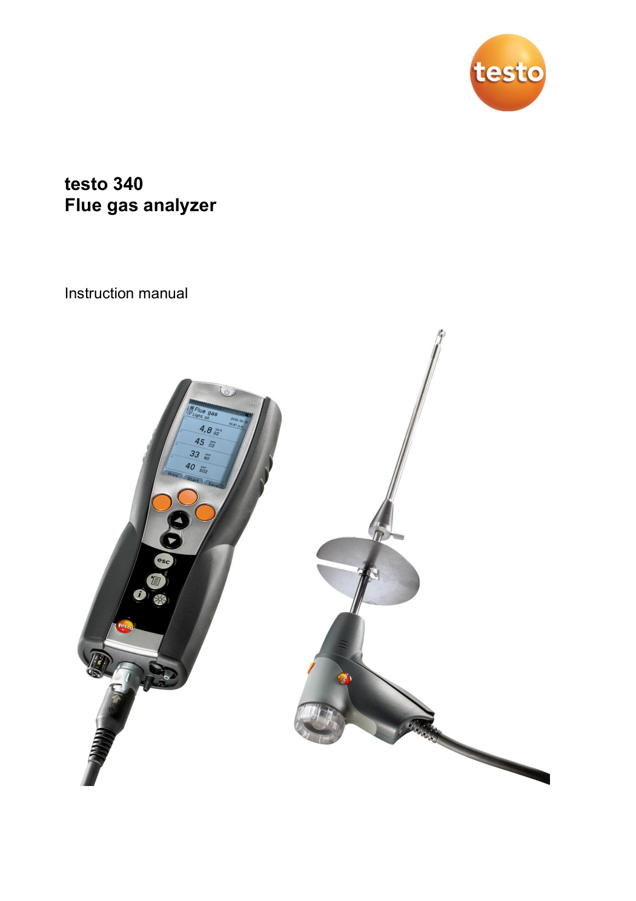
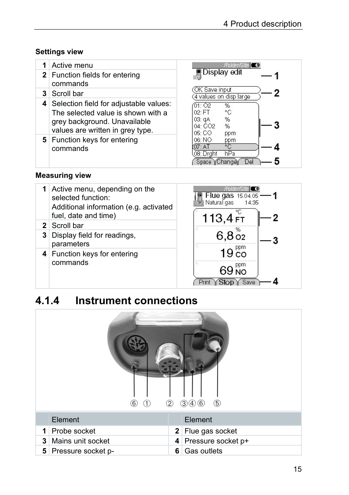
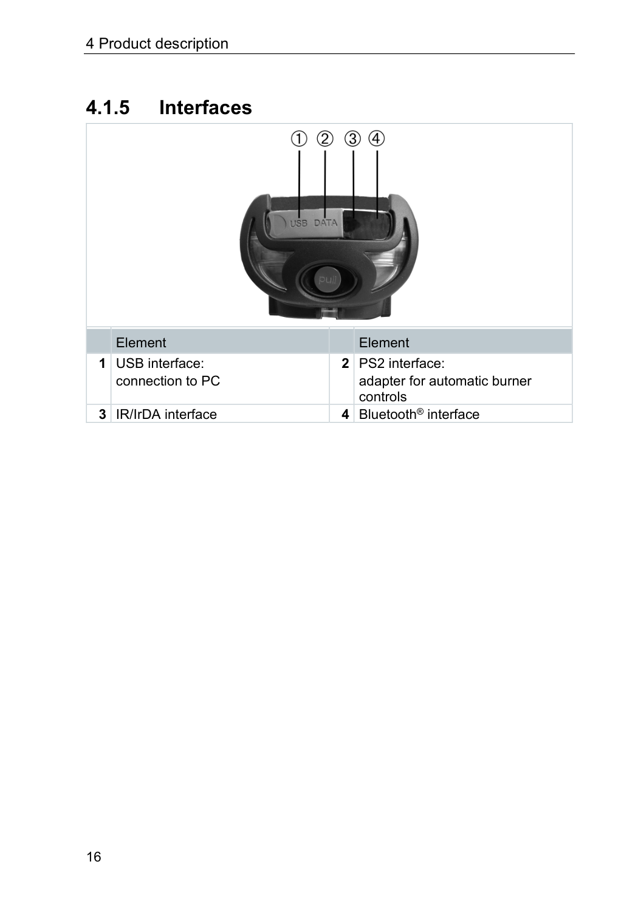
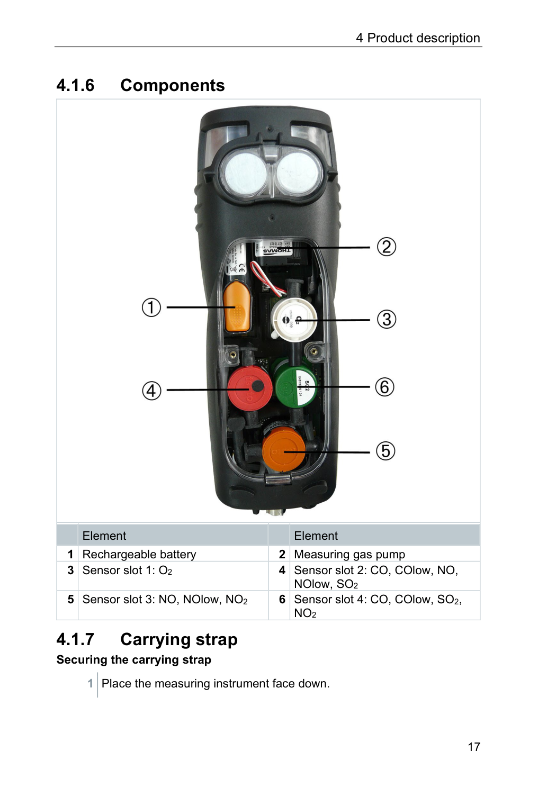

Analizador de gases Testo 340
Código patrimonial: 33691.07.051330 · Laboratorio: Gabinete de Calidad de Aire
Emisiones en fuentes fijas (O2, CO, NO, NO2, SO2, temperatura de humos).

1. Objetivo
Establecer el procedimiento de puesta en marcha, cero automático, muestreo de chimeneas y purga del analizador portátil Testo 340, aplicable al monitoreo de emisiones gaseosas y fuentes fijas.
Referencias
- EPA Method 3A, 7E, 10 y 6C · Manual del fabricante Testo 340 · D.S. N.° 003-2017-MINAM.
2. Ficha técnica
| Parámetro | Especificación |
|---|---|
| Gases medidos | O2, CO, NO, NO2, SO2, temperatura de humos |
| Rango O2 | 0 a 21% vol. |
| Rango CO | 0 a 4000 ppm (hasta 30000 ppm con dilución) |
| Tiempo de respuesta (t90) | <30 s (O2, CO); <40 s (NOx, SO2) |
| Alimentación | Li-ion 3.7 V 5.2 Ah (8 h) / AC 100-240 V |
3. Calibración y verificación
| Actividad | Periodicidad | Patrón |
|---|---|---|
| Calibración con gases patrón | Anual (laboratorio acreditado con mezcla EPA) | Cilindros EPA CO, NO, NO2, SO2 en N2 |
| Puesta a cero automática | Diaria / en cada muestreo (60 s en aire limpio) | — |
| Purga post-medición | Obligatoria 5 min con aire fresco | — |
Requisitos de la recalibración: equipo a 20 min de calentamiento, aire limpio para el cero, tubo de absorción libre, gas de prueba a presión máxima 30 hPa y aceptación del valor nominal cuando la lectura se estabilice.
4. Flujo de trabajo (3 fases · 9 pasos)
Fase I · Arranque e inspección
- Puesta en marcha en aire limpio, lejos de penachos.
- Completar el ciclo automático de cero (~60 s).
- Verificar O2 en 20.9% y comprobar trampa de condensados.
Fase II · Muestreo
- Insertar la sonda en el ducto y asegurar el cono.
- Iniciar bomba y monitorear CO, NO, NO2, SO2.
- Esperar estabilidad 3–5 min y grabar el punto.
Fase III · Cierre y purga
- Retirar la sonda caliente con guantes térmicos.
- Purgar 5 minutos hasta volver a O2 20.9%.
- Apagar, desconectar mangueras y guardar en maletín.
Pulsa un paso para marcarlo como realizado.
5. Seguridad y EPP
Casco con barboquejo + arnés cuerpo entero.
Respirador media cara con filtros para gases ácidos.
Guantes de cuero y térmicos para sondas calientes.
Lentes antiimpacto en todo momento.
6. Imágenes de referencia (manual del fabricante)
Extraídas del manual Testo 340 para apoyo visual; el SOP prevalece.



7. QR de trazabilidad
Escanea para abrir esta tarjeta en el navegador.
Volver al índiceFuente: DOCX SOP-LAB-EQ-33691.07.051330 editado 06/10/2026. Manual: Testo 340 Flue Gas Analyzer Instruction Manual. No publicado para auditorías;prevalece el SOP completo.